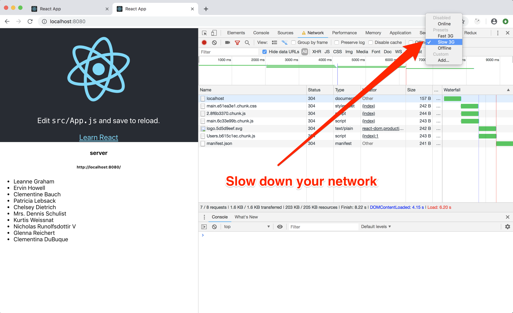

SSR - Code Splitting
I promise this is the last step :-)
You might have noticed that the SSR works correctly on the server, but we still have an annoying flickering on the client.
The page loads with all her data, but then the list get cleaned out, a "loading" appears, and in a blicnk of an eye the list is back in. Horrible!
NOTE: to make this problem even worse try to slow down your network using the Chrome Network dev tool panel (or just try to work from Italy!)

The Solution:
Open /webpack.config.extend.js and add the webpackReactLoadable plugin:
const { webpackReactLoadable } = require('@marcopeg/react-ssr/lib/webpack-react-loadable')
module.exports = config => webpackReactLoadable(config)
The Problem:
Do you remember that we used react-loadable in /src/features/users/index.js so to
make the whole Users' feature UI build into a separated bundle?
This is a common way of improving load time in your app as the end user will download only a portion of your entire app that interest the specific route she's asking (more about routing later on).
Every time you use react-loadable to require a module Webpack creates a new chunk
ending up in a separated javascript file that your app need to download. The
cool thing about loadable is that while the user is waiting for the chunk to come,
you can provide an alternate component... like a "loading..." message.
During SSR there are no problems, all gets correctly loaded and the resulting HTML is correctly spit out.
If you had no Javascript on the client you wouldn't notice any flickering!
The real problem is that the client boots with only the Javascript entry point. Then it finds out that another piece is required and begins to download, but in the meanwhile it will render the fancy "loading..." message over our server side rendered list of people!
This annoying thing will last as long as it takes to download the file, often a very short time, still enough to annoy me very much.
The Solution Explained:
By extending the webpack configuration with
the webpackReactLoadable plugin we produce a map of which component was written in
which chunk.
You can open this map from
/build/react-loadable.json.
During SSR we also keep track of every component that has been involved in the rendering process, and check out the relative chunk from the map.
With those informations it's a simple step to simply inject those <script> tags in the
resulting HTML source, so that all the code that is needed to generate the first paint
will be in place right away without further HTTP requests.